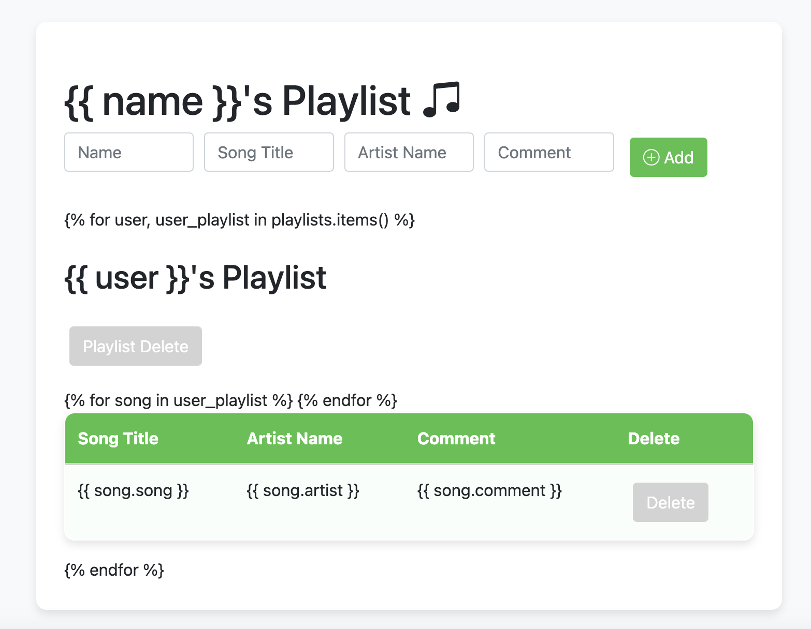
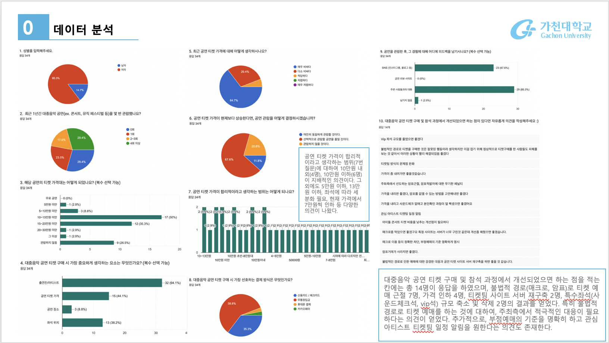
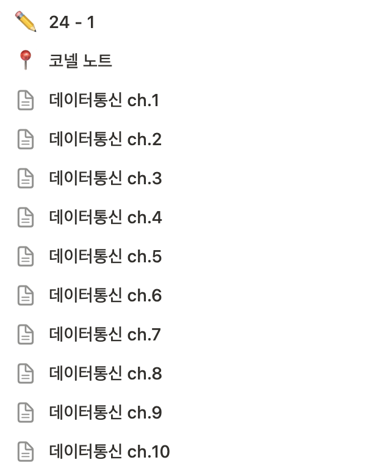
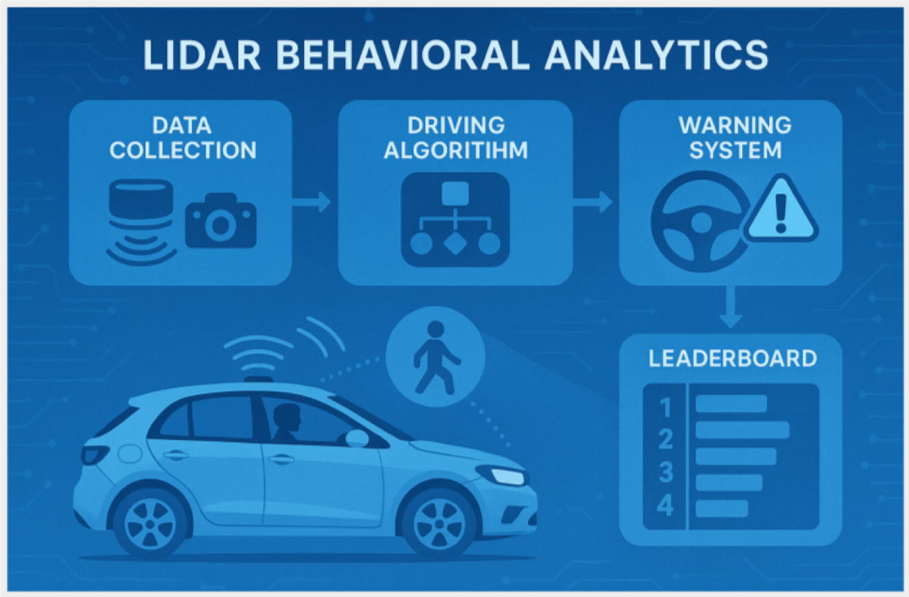

🧠 Devlog

파이썬 프로젝트
Python을 활용한 간단한 음악 플레이리스트 작성

데이터사이언스 프로젝트
대중음악 공연 티켓에 관한 사용자 의견 분석 및 피드백
설문조사를 통해 데이터를 수집하고, 분석하여 프로젝트를 진행

데이터통신 공부
노션을 활용하여 데이터통신 과목을 각 단원별 정리
추후 정보처리기사 시험 준비에 활용 예정

소프트웨어공학 설계서 프로젝트
아키텍처 설계서, ERD 등 다양한 다이어그램 작성